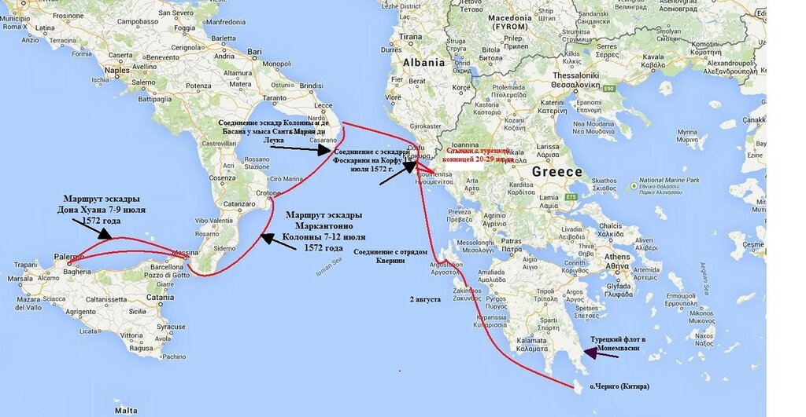

«Маневры фарс – осмеян Марс»(с)
Что ж это? Пошлый фарс?.. К чему ж я в нем актером?
С. Я. Надсон. Ночь и день
В Венеции дож и сенаторы начали терять терпение. Время идет, а собранный с таким трудом и с таким затратами ресурсов флот простаивает в пунктах базирования. 7 июля 1572 года они направили два письма послу Венеции в Мадриде Леонардо Донадо. В первом содержится поручение посетить Филиппа II и донести до него озабоченность венецианского руководства. Волнения во Фландрии не отменяют обязательств Испании по договору 10 февраля. Испанский флот обязан вместе с флотами папы и Венеции нанести решающее поражение туркам и окончательно уничтожить морскую мощь османов. Только такое решение повысит репутацию Филиппа и вместе с тем позволит решить и все другие проблемы Испании, включая и связанные с действиями французов.
Во втором письме посол информируется о деятельности дожа и сената, направленной на попытки склонить Дона Хуана у участию в экспедиции объединенного флота против турок. Но время уходит. По информации разведки, в конце июня турецкий флот из 150 галер под командованием Улудж Али покинул Стамбул и находится уже в Эгейском море, он угрожает островам Тенос (Тинос) и Чериго (Китира), а также другим владениям Светлейшей в регионе. В этой обстановке Дон Хуан всячески сопротивляется переходу объединенного флота на Корфу, ссылаясь на отсутствие приказа из Мадрида. Тем самым турки поощряются на новые захваты территорий, а престиж объединенного флота христиан упал до самого низкого уровня.

Карта кампании 1572 года
В ответном письме Донадо содержится давно ожидаемая весть: Филипп II принял, наконец-то, решение действовать и уже 4 июля направил указание Дону Хуану начать экспедицию в Левант. В этот же день курьер с посланием покинул Мадрид, через три дня прибыл в Барселону , откуда на галере направился напрямую в Мессину, минуя Геную и Неаполь. Чтобы никакие случайности не могли повлиять на доставку этого важного распоряжения в Мессину, параллельно туда же был направлен гонец сухопутным путем.
В послании короля Дону Хуану предоставлятся практически полная свобода рук (ha dato ordine liberissimo a don Giovanni senza alcuna riserva) в дальнейшем использовании флота. Он должен с эскадрой из «64 галер, лучших из имеющихся в наличии, 33 парусных кораблей ("naves y los barcones" ) с 16 000 солдат на борту (6 000 испанцев, 4 000 германцев и 6 000 итальянцев), а также 30-40 малых судов» немедленно соединиться с венецианским флотом в Корфу.
Из этого письма мы видим, что в распоряжение Дона Хуана передавались не все силы испанской короны, находящиеся в Мессине. Действительно, в резерве оставались 5000 испанских и 4000 германских солдат, а также 39 галер, которые передавались в распоряжение Джованни Андреа Дориа. «Если никаких неожиданностей не произойдет до середины августа, то Дориа может с этими галерами присоединиться к Дону Хуану в Леванте» - так писал испанский король своим флотоводцам.
Реально события развивались следующим образом. Папский адмирал Маркантонио Колонна, не дождавшись согласия Дона Хуана, вышел из Мессины 7 июля с флотом из 56 галер (13 – из состава папского флота, 18 – испанских и 25 венецианских). Дон Хуан с большей частью испанского флота направился в Палермо, с намерением взять затем курс на Алжир и Бизерту. Однако по пути его догнала галера с посланием Филиппа от 4 июля и он вернулся на Сицилию. Между тем Маркантонио Колонна с флотом 9 июля прибыл в Котрон (Кротон), где пополнил запасы пресной воды и направился к мысу Санта Мария ди Леука, где встретился с эскадрой Алваро де Басана в составе 36 галер и четрырех парусников. Эскадра зашла в Отранто, вновь пополнила запасы воды и 15 июля прибыла на Корфу. Эскадру салютом встретил венецианский флот под командованием Фоскарини в составе 76 галер, шести галеасов и 25 галиотов.
20 июля объединенный христианский флот взял курс на Игуменицу. Здесь флот остановился и Колонна направил две своих галеры к остову Чериго на разведку. В Игуменице флот провел несколько дней, отбиваясь от атак турецкой конницы, препятствующей пополнению запасов воды. Пришлось высаживать на берег десант для отражения турецких атак. Во время стоянки у Игуменицы Колонна получил письмо от Дона Хуана от 16 июля, который сообщал о своем отплытии на соединение с остальным флотом и давал указание ожидать его на Корфу. Это означало необходимость флоту Колонны возвращаться из Игуменицы на Корфу. Командующий венецианской эскадрой и слышать не хотел о возвращении, так как это означала дальнейшее промедление в начале боевых действий против турецкого флота. Колонна, после недолгих колебаний, также решил продолжать начатую кампанию. Оба адмирала, таким образом, отказались выполнять приказ своего главнокомандующего. После возвращения посланных на разведку галер, так и не сумевших получить информацию о флоте Улудж Али, 29 июля христианский флот оставил Игуменицу и направился на Кефалонию. Здесь к ним присоединились 12 галер и 2 галиота с Крита под командованием Марко Кверини. Численность христианского флота достигла 145 галер, шести галеасов, 25 галиотов и 22 парусных кораблей. 2 августа армада прибыла к Занте (Закинф), где пополнила запасы свежих овощей и фруктов, которыми славился остров, и воды, после чего направились к острову Чериго (Китира), где узнали, что буквально накануне их прихода 4 августа здесь пополняли запасы воды шестьдесят турецких галер на восточном берегу острова. В настоящее время турецкий флот находится в Монемвасии, на расстоянии не более сорока миль от Чериго. По данным, полученным от местных жителей, в его состав входило 150 галер и 50 больших галиотов.
Немногим больше суток спустя после прибытия христианского флота на Чериго Улудж Али вывел свой флот из Монемвасии с намерением провести доразведку флота противника и в случае отсутствия в его составе испанской эскадры – атаковать и уничтожить его.
Продолжение в следующий раз.